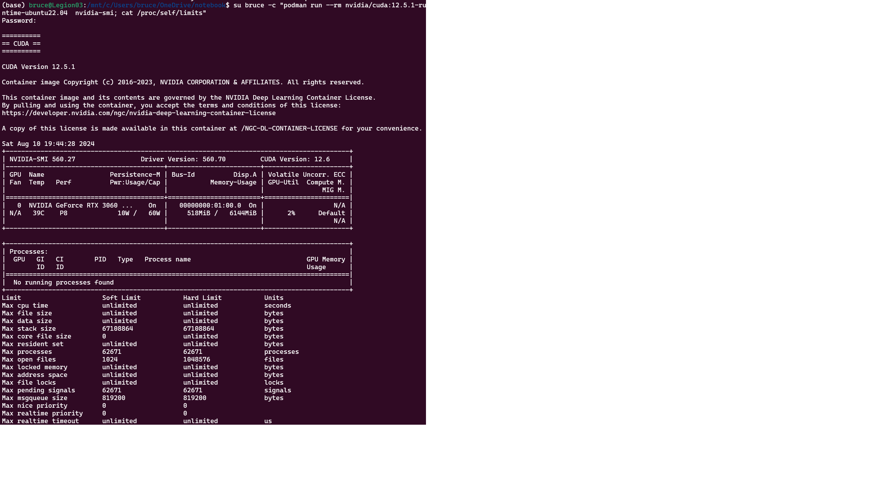

How to set up GPU development for containers with Podman
In this article, learn how to set up your GPU development environment to run inside Podman. Most users can simply alias Docker to Podman (alias docker=podman) without any problems.
Podman supports the Container Device Interface.
The following is a compilation from sources, bug reports, GitHub repos that worked when I tried it on my laptop. Special thanks to henrymai who's README was significant help.
Definitions
- Podman is a utility so you can create and maintain containers. Podman is a daemonless, open source, Linux native tool designed to make it easy to find, run, build, share and deploy applications using Open Containers Initiative (OCI) Containers and Container Images. See What is Podman,
- CDI is an open specification for container runtimes that abstracts what access to a device, such as an NVIDIA GPU, means, and standardizes access across container runtimes. Popular container runtimes can read and process the specification to ensure that a device is available in a container. CDI simplifies adding support for devices such as NVIDIA GPUs because the specification is applicable to all container runtimes that support CDI.
Prerequisites
You will need to have:
- Laptop or desktop with GPU
- Device drivers installed
- WSL installed
- Visual Studio Code (or other Linux text editor)
- The username
- Recent version of Podman > 4.7. This code tested on version 5.5.2
To check the version you have installed use:
podman --version
See Install NVIDIA GPU display driver for details.
Upgrade Ubuntu
sudo apt-get remove snapd
sudo apt-get update
sudo apt-get upgrade
sudo do-release-upgrade
# get release version
ubuntu_release=lsb_release -r
$ubuntu_release
Install podman
You will also need Podman installed. Start WSL, then run
sudo apt-get update
sudo apt-get -y install podman
Add docker.io registry
echo 'unqualified-search-registries = ["docker.io"]' | sudo tee /etc/containers/registries.conf
Start Podman
To start Podman the first time, run:
podman machine init
podman machine start
To test you have the prerequisites installed, type the following command into WSL:
podman run ubi8-micro date
You should see today's date.
Install Toolkit or Toolkit Base
You will need to install either the NVIDIA Container Toolkit or you installed the nvidia-container-toolkit-base package.
Get the Ubuntu version
. /etc/os-release
echo "$VERSION_ID"
To install the NVIDIA container toolkit, run:
distribution=ubuntu + echo "$VERSION_ID"
curl -s -L https://nvidia.github.io/libnvidia-container/gpgkey | sudo apt-key add - && curl -s -L https://nvidia.github.io/libnvidia-container/$distribution/libnvidia-container.list | sudo tee /etc/apt/sources.list.d/nvidia-container-toolkit.list
sudo apt-get update
sudo apt-get install nvidia-container-toolkit
For more information, see Installing the NVIDIA Container Toolkit.
Set the rootless configuration
Set the NVIDIA container runtime to run as rootless. This sets you up for Podman's ability to manage containers without root access.
code /etc/nvidia-container-runtime/config.toml
Modify the config.toml file as follows:
[nvidia-container-cli]
#no-cgroups = false
no-cgroups = true
[nvidia-container-runtime]
#debug = "/var/log/nvidia-container-runtime.log"
debug = "~/.local/nvidia-container-runtime.log"
Setup missing hook for nvidia container runtime
Run:
sudo mkdir -p /usr/share/containers/oci/hooks.d/
cat << EOF | sudo tee /usr/share/containers/oci/hooks.d/oci-nvidia-hook.json
{
"version": "1.0.0",
"hook": {
"path": "/usr/bin/nvidia-container-toolkit",
"args": ["nvidia-container-toolkit", "prestart"],
"env": [
"PATH=/usr/local/sbin:/usr/local/bin:/usr/sbin:/usr/bin:/sbin:/bin"
]
},
"when": {
"always": true,
"commands": [".*"]
},
"stages": ["prestart"]
}
EOF
Increase memlock and stack ulimits
This is necessary otherwise any reasonable sized training run will hit these limits immediately.
Use:
code /etc/security/limits.conf
Assuming your username is someuser:
someuser soft memlock unlimited
someuser hard memlock unlimited
someuser soft stack 65536
someuser hard stack 65536
Generate CDI specification file
Generate the CDI specification file
sudo nvidia-ctk cdi generate --output=/etc/cdi/nvidia.yaml
You should see something like this:
INFO[0000] Auto-detected mode as "nvml"
INFO[0000] Selecting /dev/nvidia0 as /dev/nvidia0
INFO[0000] Selecting /dev/dri/card1 as /dev/dri/card1
INFO[0000] Selecting /dev/dri/renderD128 as /dev/dri/renderD128
...
Check the names of the generated devices
nvidia-ctk cdi list
System returns:
INFO[0000] Found 1 CDI devices
nvidia.com/gpu=all
Running a container with Podman's GPUs
Test the installation by running:
podman run -it --group-add video docker.io/tensorflow/tensorflow:latest-gpu-jupyter nvidia-smi
To build your container
Look up the latest version of nvidia/cuda on docker.io. See nvidia/cuda on DockerHub. In my case, I found nvidia/cuda:12.5.1-runtime-ubuntu22.04
su someuser -c "podman run --rm nvidia/cuda:12.5.1-runtime-ubuntu22.04 nvidia-smi; cat /proc/self/limits"
The command requests the full GPU with index 0 and the first MIG device on GPU 1. The output should show only the UUIDs of the requested devices.

Resources
See: